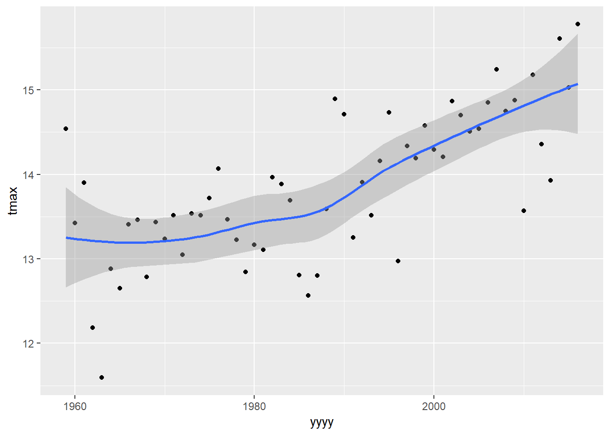
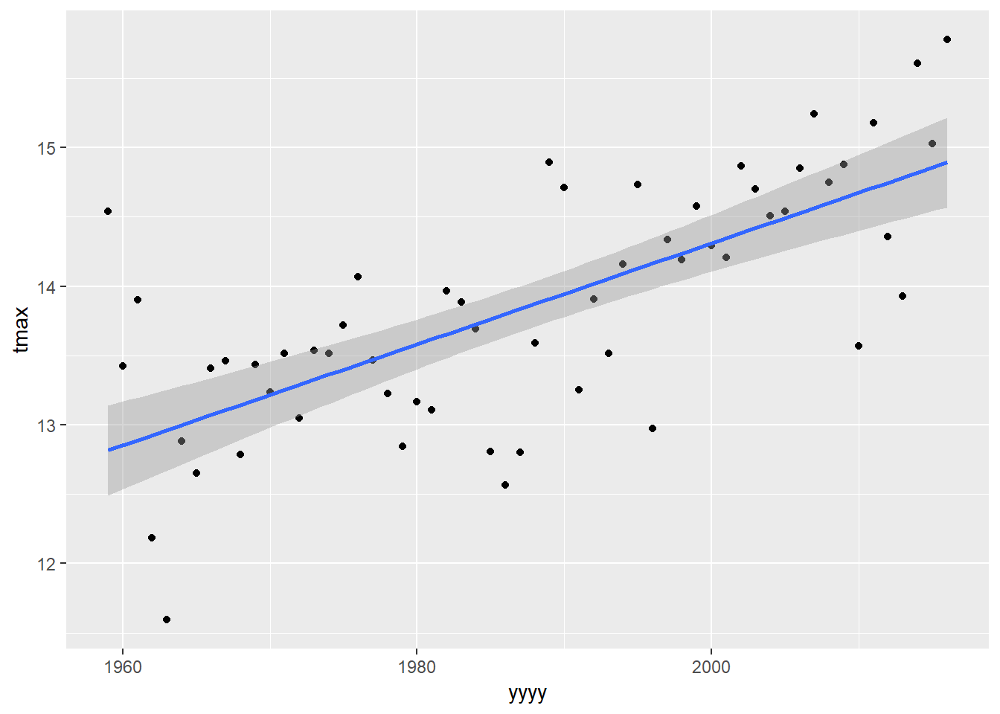
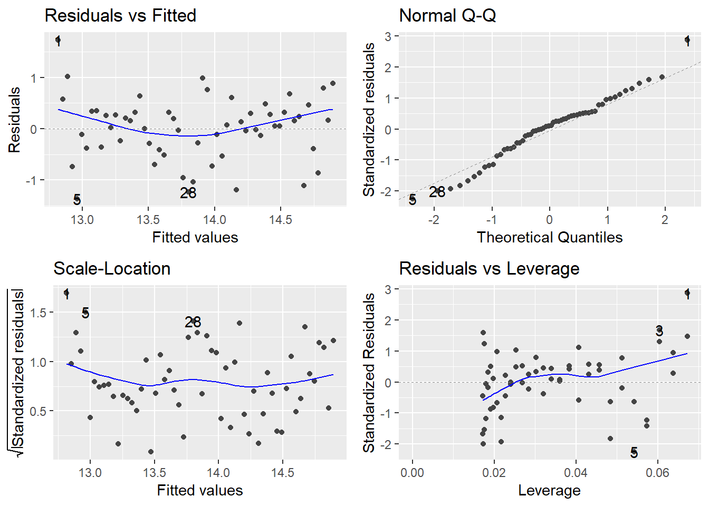
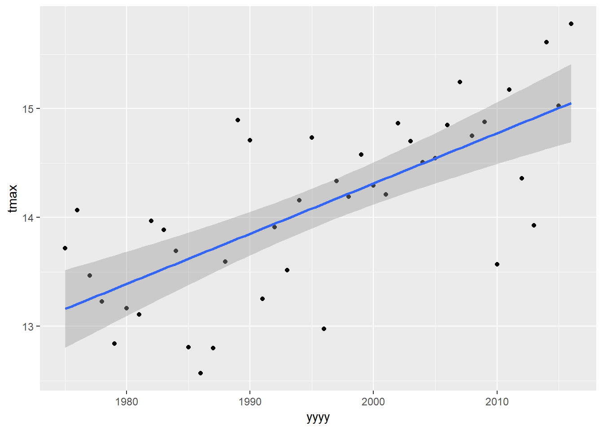
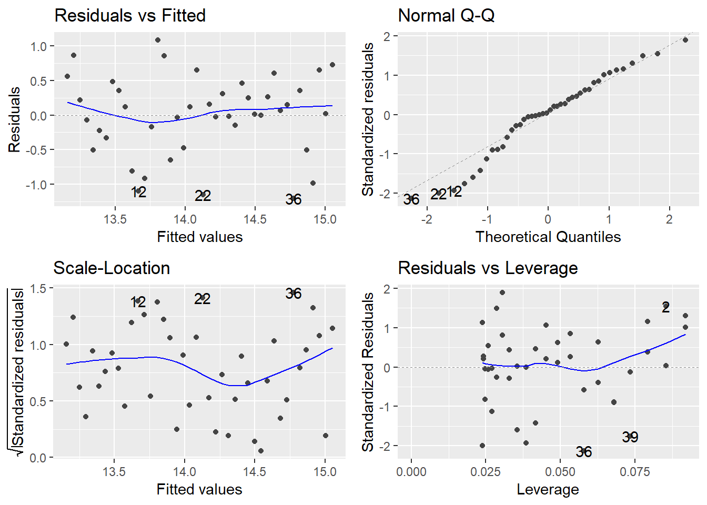
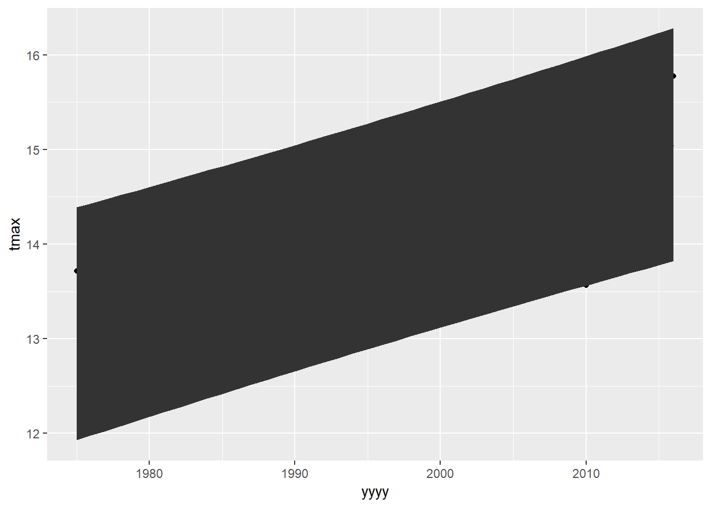
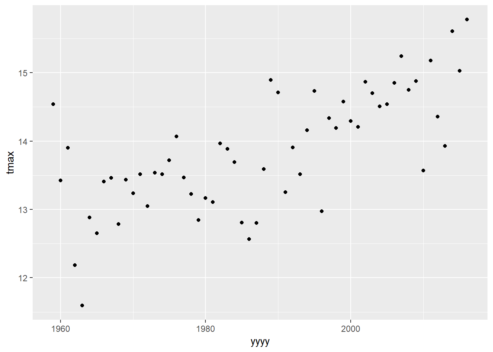
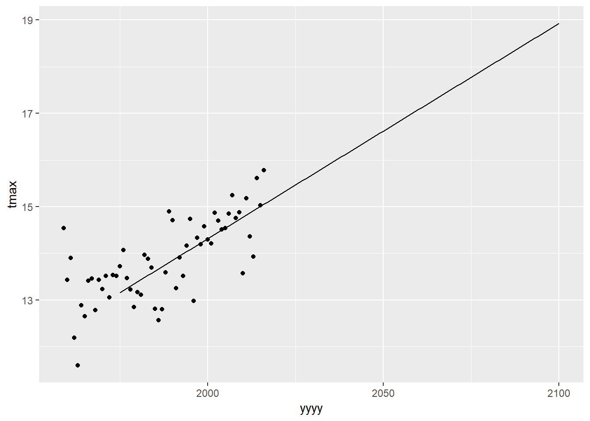
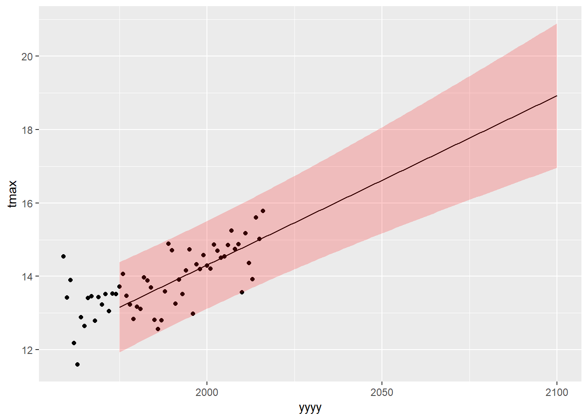

Chapter 9 Modelling
9.1 Set Up for Session
Packages used = ggplot2, ciTools, dplyr, ggfortify Data used: eastbournedata.csv
library(dplyr)
library(ggplot2)
library(ciTools)## ciTools version 0.5.1 (C) Institute for Defense Analyseslibrary(ggfortify)
eastbourne<-read.csv("C:/Users/FaheemAshraf/Dropbox (SSD)/Faheem_workings/2018-11-22 - R Course Editing/Book version files/Data/eastbournedata.csv")9.2 Exploring Data
The data for this example is taken from the UK Met office and contains the average daily maximum temperatures, minimum temperatures and rainfall for all years since 1959.
plot1<-ggplot(data=eastbourne,aes(y=tmax,x=yyyy))+
geom_point()
plot1
What would be our initial thoughts about the relationship between temperature and time in Eastbourne?
geom_smooth is a nice way to add on simple models to your plot that we have seen before.
plot1 +
geom_smooth()## `geom_smooth()` using method = 'loess' and formula 'y ~ x'
The default model fitted by geom_smooth depends on the amount of data being plotted. In this case it has told us that it is using a “loess” model to fit the line - this is a simple form of a moving average smoother. It can be useful for visualising trends that do not fit into other models, but they cannot be used for extensive statistical inference.
Lets use a more familiar model by changing the “method” option into a simple linear regression:
plot1 +
geom_smooth(method="lm")
9.3 Fitting Model
To examine what we actually have in our model we need to fit the model using the lm() command:
lm(tmax~yyyy,data=eastbourne)##
## Call:
## lm(formula = tmax ~ yyyy, data = eastbourne)
##
## Coefficients:
## (Intercept) yyyy
## -58.58684 0.03645The output by default only tells us two things: “Call” - simply repeating back the model we have specified “Coefficients”: Telling us the values of the parameters
A linear regression follows the equation of a straight line y = B0 + B1x (or y=a+bx or y=mx+c ; depending on where and when you were 12 years old) The coefficients give us the value of our intercept: -58.6 and the value of our slope: 0.036. So the overall model would be:
tmax = -58.6 + 0.036*yyyy
This means if yyyy=0 we would expect the maximum temperature in that year to be -58.6 degrees (!!!) and for every one year increase the average temperature increase is 0.036 degrees.
To get more output then we need to save the model to an object:
tmaxmodel<-lm(tmax~yyyy,data=eastbourne)Then there are lots of functions that give us different pieces of output and inference from this model.
summary(tmaxmodel)##
## Call:
## lm(formula = tmax ~ yyyy, data = eastbourne)
##
## Residuals:
## Min 1Q Median 3Q Max
## -1.3691 -0.3777 0.0604 0.3211 1.7267
##
## Coefficients:
## Estimate Std. Error t value Pr(>|t|)
## (Intercept) -58.586839 9.724527 -6.025 1.39e-07 ***
## yyyy 0.036448 0.004893 7.450 6.25e-10 ***
## ---
## Signif. codes: 0 '***' 0.001 '**' 0.01 '*' 0.05 '.' 0.1 ' ' 1
##
## Residual standard error: 0.6238 on 56 degrees of freedom
## Multiple R-squared: 0.4977, Adjusted R-squared: 0.4888
## F-statistic: 55.5 on 1 and 56 DF, p-value: 6.255e-10summary(model) provides us with a lot of useful information - model fit statistics (R squared values & F statistic), standard errors and p-values for the coefficients.
One thing missing is confidence intervals, this comes from confint:
confint(tmaxmodel)## 2.5 % 97.5 %
## (Intercept) -78.06740617 -39.10627121
## yyyy 0.02664692 0.046249319.4 Checking Model
We should also check our model fit plots to assess model validity.
autoplot(model) from the ggfortify package produces 4 model checking plots. When we are working with time series data it is also very useful to produce an extra plot - the acf (auto-correlation plot) to assess the strength of temporal correlation.
autoplot(tmaxmodel)
Do these plots look OK? What are we actually looking for here?
In particular we can see a problem with the trend in the residual vs fitted plot as there is clear curvature in the pattern. Does this make sense if we go back to our original scatter plots and the loess models fitted by geom_smooth
9.5 Updating Model
One solution to solve the problem we have might be to fit a model only on the years between 1975 to 2015, since the trend during this range appears to be relatively linear. We can filter our data and then pipe through to lm:
eastbourne %>%
filter(yyyy>=1975) %>%
ggplot(aes(y=tmax,x=yyyy))+
geom_point()+
geom_smooth(method="lm")
eastbourne %>%
filter(yyyy>=1975) %>%
lm(tmax~yyyy,data=.)##
## Call:
## lm(formula = tmax ~ yyyy, data = .)
##
## Coefficients:
## (Intercept) yyyy
## -77.97949 0.04615This is slightly different to what we have seen previously with pipes because the first argument of lm() is the formula and not the data. Using the pipe automatically puts the data into the first argument of the next line. For lm(), and other functions where data is not the first argument, then saying “data=.” tells R where to put the data from the previous line.
Again we need to assign this to an object to do other useful things! Let’s first check the model validity plots to see if they look any better:
tmaxmodel_1975<-
eastbourne %>%
filter(yyyy>=1975) %>%
lm(tmax~yyyy,data=.)
autoplot(tmaxmodel_1975)
This looks better. Let’s take another look at these result:
summary(tmaxmodel_1975)##
## Call:
## lm(formula = tmax ~ yyyy, data = .)
##
## Residuals:
## Min 1Q Median 3Q Max
## -1.20748 -0.30145 0.04414 0.35503 1.08659
##
## Coefficients:
## Estimate Std. Error t value Pr(>|t|)
## (Intercept) -77.979495 14.810825 -5.265 5.07e-06 ***
## yyyy 0.046146 0.007422 6.217 2.34e-07 ***
## ---
## Signif. codes: 0 '***' 0.001 '**' 0.01 '*' 0.05 '.' 0.1 ' ' 1
##
## Residual standard error: 0.583 on 40 degrees of freedom
## Multiple R-squared: 0.4915, Adjusted R-squared: 0.4788
## F-statistic: 38.66 on 1 and 40 DF, p-value: 2.337e-079.6 Confidence and Prediction Intervals
The geom_smooth function fits confidence intervals around the line. This tells us the margin of error in the expected value of temperature in each year. This is OK, but it can also be very useful to include prediction intervals. This tells us the range where we would expect any individual observation to be.
The functions add_ci and add_pi can add in confidence intervals and prediction intervals to our original data. These work nicely in pipes, where we simply need the name of the model inside these functions.
eastbourne_int<-eastbourne %>%
filter(yyyy>=1975) %>%
add_pi(tmaxmodel_1975) %>%
add_ci(tmaxmodel_1975)To add in errors as lines this needs the geom_ribbon geom from ggplot2.
ggplot(eastbourne_int,aes(x=yyyy,y=tmax))+
geom_point() +
geom_smooth(method="lm")+
geom_ribbon(aes(ymax=UPB0.975,ymin= LPB0.025)) 
QUESTION - This graph is ‘correct’, but looks horrible. Can you find the options to make this plot look a bit better? Instead of a big black blob, how can we have something more similar to the way the error bar gets plotted in geom_smooth() - transparent and shaded in a colour rather than black?
We can also use add_ci or add_pi to give us future predictions to extrapolate our model into the future
predictiondata<-data.frame(yyyy=1975:2100) %>%
add_ci(tmaxmodel_1975) %>%
add_pi(tmaxmodel_1975)
predictiondata## # A tibble: 126 x 6
## yyyy pred LCB0.025 UCB0.975 LPB0.025 UPB0.975
## <int> <dbl> <dbl> <dbl> <dbl> <dbl>
## 1 1975 13.2 12.8 13.5 11.9 14.4
## 2 1976 13.2 12.9 13.5 12.0 14.4
## 3 1977 13.3 12.9 13.6 12.0 14.5
## 4 1978 13.3 13.0 13.6 12.1 14.5
## 5 1979 13.3 13.0 13.7 12.1 14.6
## 6 1980 13.4 13.1 13.7 12.2 14.6
## 7 1981 13.4 13.2 13.7 12.2 14.6
## 8 1982 13.5 13.2 13.8 12.3 14.7
## 9 1983 13.5 13.3 13.8 12.3 14.7
## 10 1984 13.6 13.3 13.8 12.4 14.8
## # ... with 116 more rowsWe can plot our predicted model into the future onto a nice graph as well. But - we have our raw data in one file and our predicted data in another file. So we are going to show you how to use ggplot to make a single plot from multple data frames.
Using plot1 (saved earlier) - which had used the data=eastbourne.
plot1
We can add in the aesthetics and data into any geom. But we need to add in also an option inherit.aes=FALSE. This tells R to ignore the ‘global’ aesthetics which were set in the original ggplot() statement.
plot1+
geom_line(aes(x=yyyy,y=pred),data=predictiondata,inherit.aes = FALSE) 
We can then add our prediction interval in the same way:
plot1+
geom_line(aes(x=yyyy,y=pred),data=predictiondata,inherit.aes = FALSE) +
geom_ribbon(aes(x=yyyy,ymax=UPB0.975,ymin=LPB0.025),data=predictiondata,alpha=0.2,fill="red",inherit.aes = FALSE)
9.7 Extending to multiple regression:
We can add variables into our model using +. Let’s add rainfall as a potential predictor for tmax.
tmaxrain<-lm(tmax~yyyy+rain,data=eastbourne)
summary(tmaxrain)##
## Call:
## lm(formula = tmax ~ yyyy + rain, data = eastbourne)
##
## Residuals:
## Min 1Q Median 3Q Max
## -1.36728 -0.37668 0.06186 0.31932 1.72483
##
## Coefficients:
## Estimate Std. Error t value Pr(>|t|)
## (Intercept) -5.850e+01 9.889e+00 -5.916 2.20e-07 ***
## yyyy 3.642e-02 4.950e-03 7.359 9.74e-10 ***
## rain -5.395e-04 7.796e-03 -0.069 0.945
## ---
## Signif. codes: 0 '***' 0.001 '**' 0.01 '*' 0.05 '.' 0.1 ' ' 1
##
## Residual standard error: 0.6294 on 55 degrees of freedom
## Multiple R-squared: 0.4978, Adjusted R-squared: 0.4795
## F-statistic: 27.26 on 2 and 55 DF, p-value: 5.95e-09It looks like there is no evidence of a relationship between rainfall and maximum temperatures.
9.8 Exercise
Repeat the whole modelling process for the column tmin instead of tmax. Start by making a scatter plot, using geom_smooth to fit a linear model onto this graph and then use lm() to fit a model, check the validity, draw conclusions about how tmin has changed over time, if so by how much, and make predictions for the next 5 years
- Start with producing a scatter plot, using geom_smooth to fit lines, using booth the smoother and the linear regression
ggplot(data=eastbourne,aes(y=??,x=???))+???Then fit a model of minimum temperature against year:
Then check the model validity:
Then look at and interpret the summary table:
Then make a plot showing the fitted model, and add some prediction intervals around your model:
(Difficult question) Make a plot showing both tmin and tmax on the same axes and the fitted models for both.